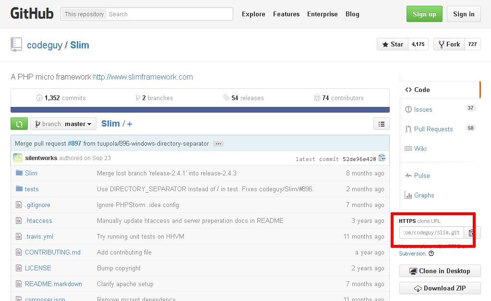
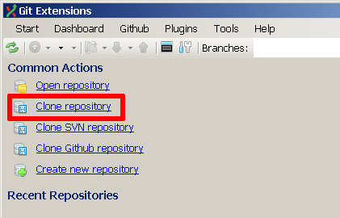
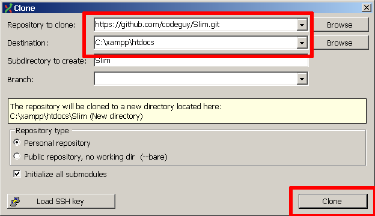
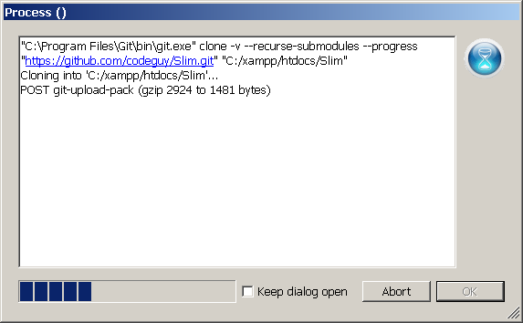
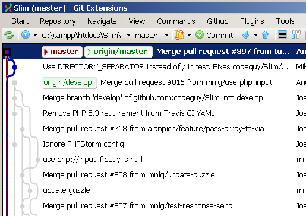

Deploy an Application Using Git
Git is a popular distributed version control system. As you work with XAMPP, you might often find yourself needing to download and install applications or code libraries from a developer’s public git repository.
This guide walks you through the process, showing you how to use a git client to transfer code from a public online git repository to your XAMPP server. As an example, this guide assumes that you wish to download the latest version of Slim, a popular PHP micro-framework for Web application development that also has its own Github repository. NOTE: This guide uses Git Extensions, an open source git client that’s available for Windows, Linux and Mac OS, and assumes that you have already downloaded and installed this software. If you don’t already have this, you can download it from the official Git Extensions website, and install it using these instructions.
To download Slim (or any other application) from its git repository, follow these steps:
-
Ensure that your Apache server is running.
-
Obtain the repository’s clone URL. On Github, this can be easily obtained by visiting the project’s Github page and copying the clone URL from the right side of the page. For third-party or private git repositories, you can obtain the clone URL by asking the project team directly. Make a note of the clone URL, as you’ll need it in subsequent steps.
 -
Launch Git Extensions by double-clicking the icon in the Windows Start menu or Start screen.
-
Click the "Clone repository" link or use the "Start → Clone repository…" menu item.
 -
In the resulting "Clone" dialog box, enter the clone URL obtained in the first step. Set the destination directory to the htdocs\ subdirectory of your XAMPP installation directory (typically, C:\xampp). Optionally, change the name of the subdirectory that will hold the downloaded code.
 -
Click the "Clone" button to start cloning the repository. Git Extensions will display a progress dialog as it downloads the code from the source repository.
 -
Once the repository has been cloned, Git Extensions will prompt you to open the new repository. Click "Yes".
You should now see the entire commit history of the repository in a graphical tree structure, together with details on the changes made in each commit.

At this point, the code has been downloaded from the remote git repository and you can begin using it. In this particular case, since the Slim framework includes a starter application, you can simply browse to the URL http://localhost/Slim and you should see the example application’s welcome page, as shown below.
| You can use Git Extensions to create a new branch of the codebase should you wish to make any changes to it. Any changes you make will be automatically reflected in the Git Extensions interface, and if you have appropriate privileges, you can also commit your changes back to the remote repository. Learn more about git, or read the Git Extensions documentation. |